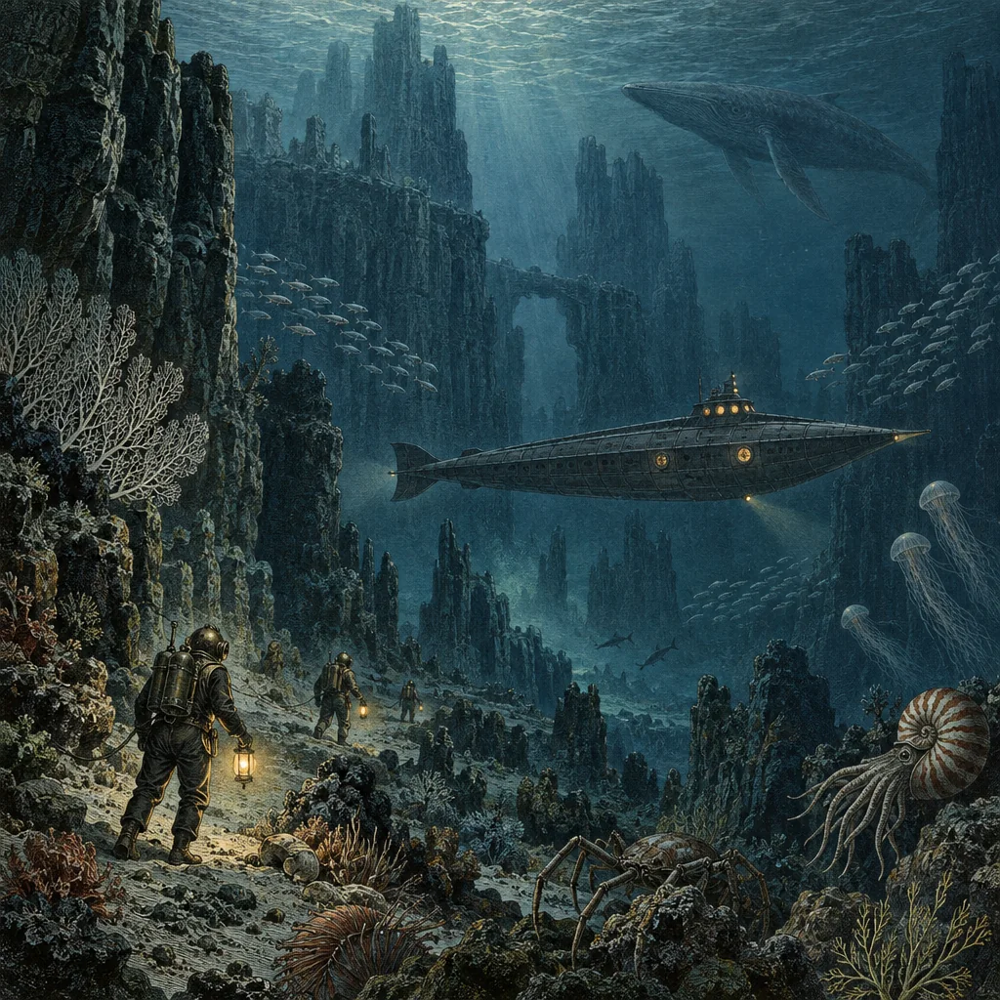
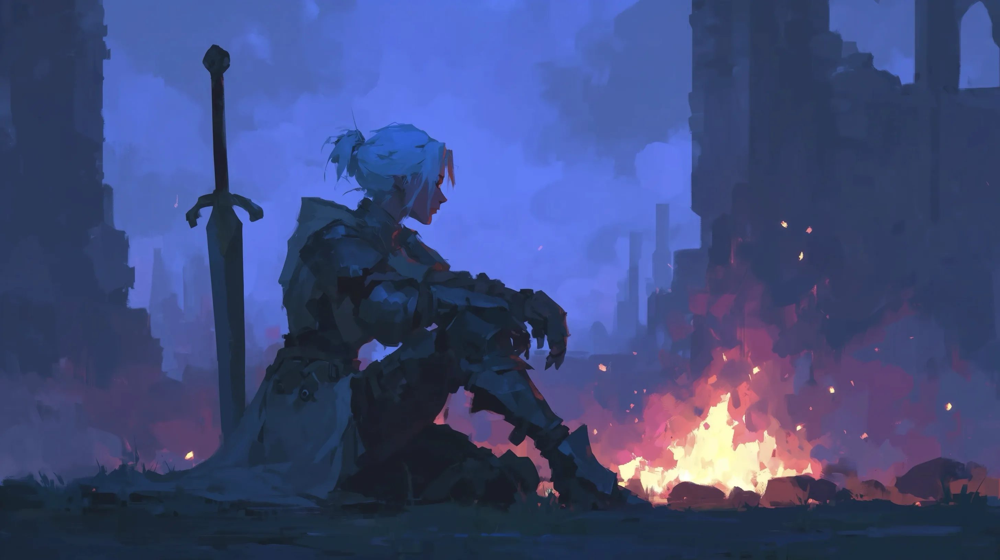

Narrative roleplaying
Seekers of the Deep
A tabletop RPG with an AI game master and voiced companions, set in worlds adapted from books or original adventures.
About the game →
Narrative roleplaying
A tabletop RPG with an AI game master and voiced companions, set in worlds adapted from books or original adventures.
About the game →
Fantasy roleplaying
A fantasy RPG with an AI dungeon master, character creation, dice rolls and turn-based combat.
Visit Sword & SorceryNo games match.